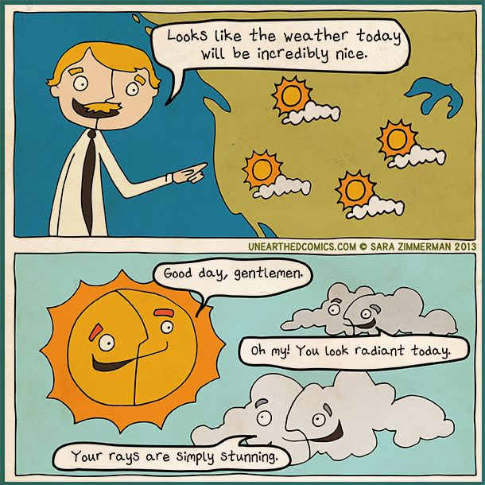

Isaiah 55:10
For as the rain and the snow come down from heaven and do not return there but water the earth,
making it bring forth and sprout, giving seed to the sower and bread to the eater.
Remember to start your independent science experiment if you haven't already!
Student Notebook hyperlinks for module 7:
p. 89 in the SNB: link.apologia.com/ECPS2N/7.1 Wind webpage by Weather Whiz Kids
Required Videos and Links:
Air Masses and Weather Fronts by KidsGeo - Read this series of webpages please!
How Did Clouds Get Their Names TED-Ed video by Richard Hamblyn
Reasons for the seasons - a TED-Ed video by Rebecca Kaplan
Cold Fronts and Warm Fronts by Keith Meldahl
Global Atmospheric Circulation by Keith Meldahl
The Coriolis Effect by PBS NOVA
The Coriolis Effect by What the Physics?!
What are weather fronts? by the British Met Office - Weather
The Atmosphere by Bozeman Science
A couple of cool gifs:
Seasons in the north hemisphere
Summer in the Northern Hemisphere
Summer and Winter Solstices


Optional but Helpful:
Coriolis Effect: IDTIMWYTIM
Weather vs. Climate
Vocabulary Flashcards on Quizlet
Module 7 flash cards
Interesting lenticular cloud over Dublin, Ireland (Wikimedia Commons)
{kind=link}

A lenticular cloud over La Verne, California

